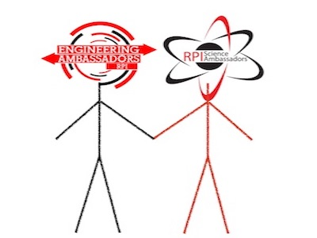

About Us
Our Mission Statement

The Rensselaer Science Ambassadors are an assembly of highly motivated undergraduate students focused on inspiring a younger audience to explore the role of science in society.
We are a growing organization, working with Engineering Ambassadors
Who we are:
The Rensselaer School of Science and its Center for Initiatives in Pre-College Education (CIPCE) have launched an endeavor known as the Science Ambassadors (SA). The Science Ambassadors are an assembly of highly motivated undergraduate students focused on inspiring a younger audience to explore the role of science in society. The SA's are comprised of undergraduate students in a variety of science majors. Students participate in an extensive communications and professional development training in order to learn techniques to develop highly engaging presentations and hands-on demonstrations to bring science to life in K-12 classrooms. SA's participate in six full day visits to regional schools through the academic year in order to expose students and encourage them to consider careers in STEM fields, and help students define the relevance between their classroom learning and real world applications. These programs are co-sponsored with the established Engineering Ambassadors outreach program in the School of Engineering.
Goals:
To bring the Science Community to the forefront of K-12 education. To provide our undergraduate students an opportunity to develop communication skills, engage with student peers from different disciplines, and to inspire younger students’ interest in STEM fields. The SA's school site visits help students “to apply science to the common purposes of life.
Our School Visits
A Science Ambassador school visit includes bringing anywhere from two to five teams of undergraduates
to spend a day within your elementary, middle or high school to present a science topic and provide
complimentary hands-on activities. Each science topic is carefully selected so that concepts introduced
within the presentation are directly aligned to grades 6 -12 coursework in science, technology;
engineering and math (STEM). Presentations are also made age appropriate for grades 3-5 on request.
This approach helps to define the relevance between the classroom learning and real world application
of science concepts. Our presentations are scheduled in your classes within the master schedule. Each
team is prepared to present to multiple STEM related classrooms throughout the day so that by the end of
the day we have introduced different science fields to potentially hundreds of students. We also welcome
an opportunity to participate in a culminating panel discussion whereby multiple science disciplines are
represented and middle and high school students have an opportunity to ask specific questions concerning
science disciplines and college life.
Presentation Summaries


 thum.png)

See what a school site visit looks like...
Science Ambassador Team

 Josue San Emeterio (Alumnus)
Josue San Emeterio (Alumnus)
Applied Physics Class of 2015 Click to listen |
 Angelo Angelidis
Angelo Angelidis
Mathematics/Economics Class of 2016 |
 Chelsea Valente
Chelsea Valente
ITWS Class of 2016 |
 Thomas Manzini
Thomas Manzini
Computer Science Class of 2016 |
 Victoria Butler
Victoria Butler
Applied Phyiscs/Astro Physics Class of 2016 |
 Alice Huang
Alice Huang
Biology BS/MD Class of 2017 |
 Bianca Bigit
Bianca Bigit
Biology Class of 2017 |
 Heili Springsteen
Heili Springsteen
Mathematics Class of 2017 |
 Jeremy Amdur
Jeremy Amdur
Chemistry Class of 2017 |
 Katelyn Fallows
Katelyn Fallows
Chemistry Class of 2017 |
 Mitchell Mellone
Mitchell Mellone
Computer Science Class of 2018 |
 Sam Ellman
Sam Ellman
Chemistry Class of 2018 |
 Shachi Srivatsa
Shachi Srivatsa
Biology Class of 2018 |
Testimonials
|
- 7th grade science teacher |
- Middle school principal |
|
- Middle school science teacher |
- Middle school student |
|
- Middle school student |
- Middle school student |